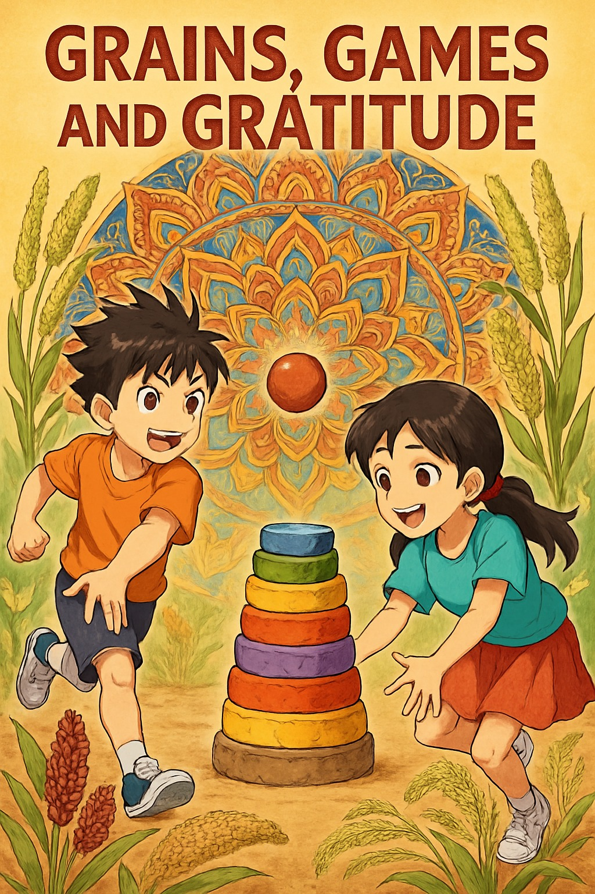
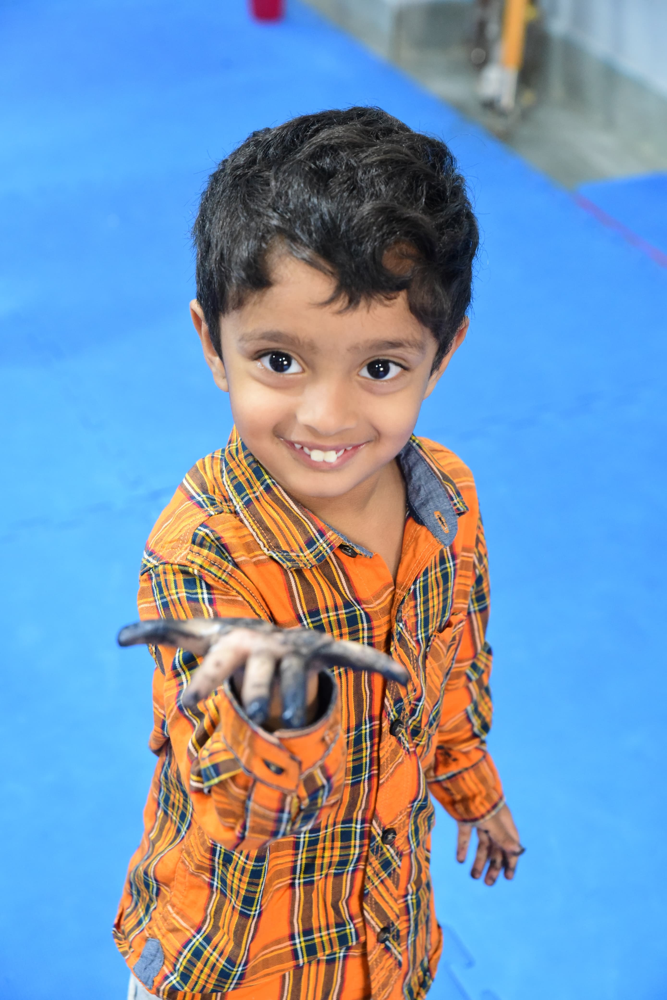
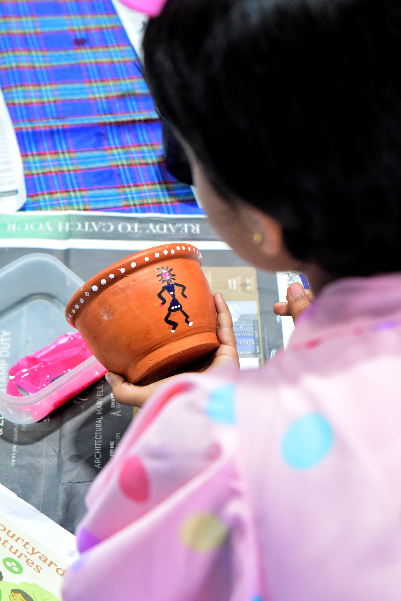
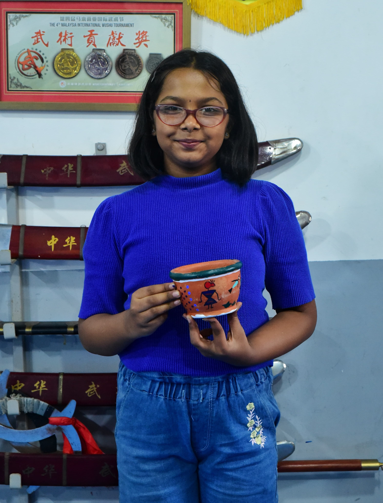
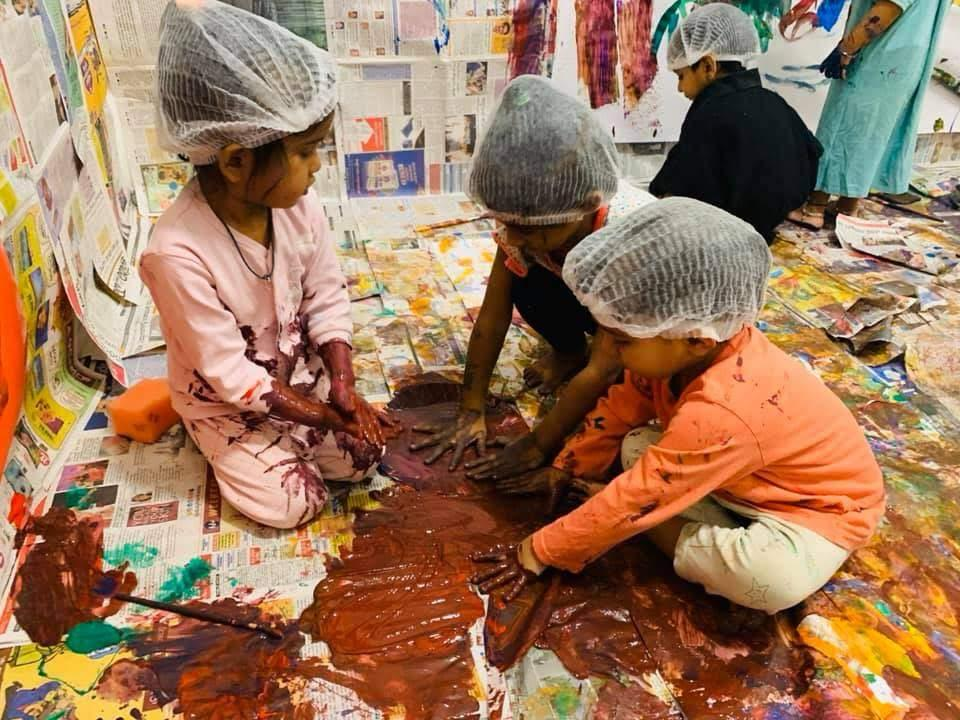
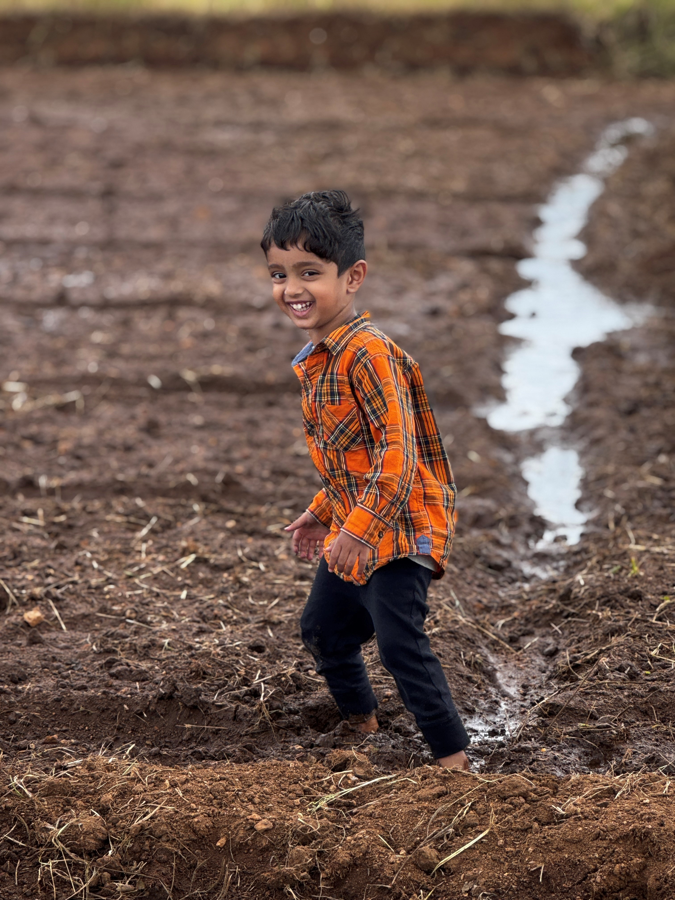
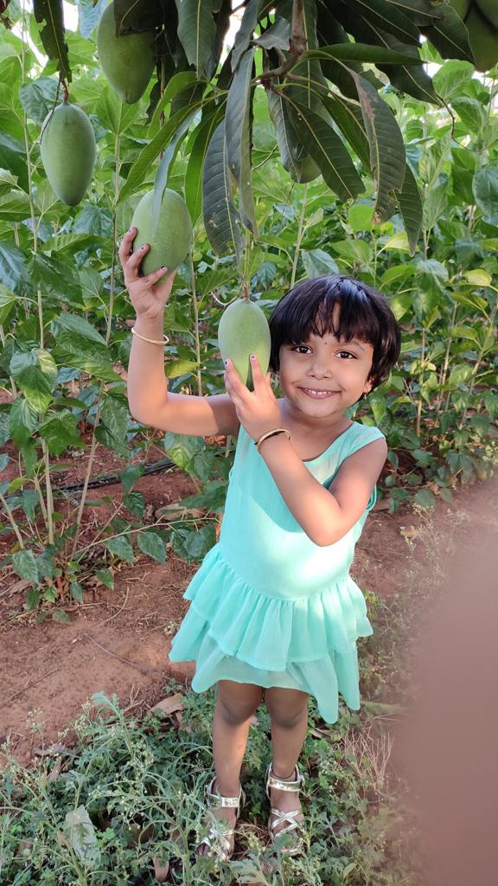
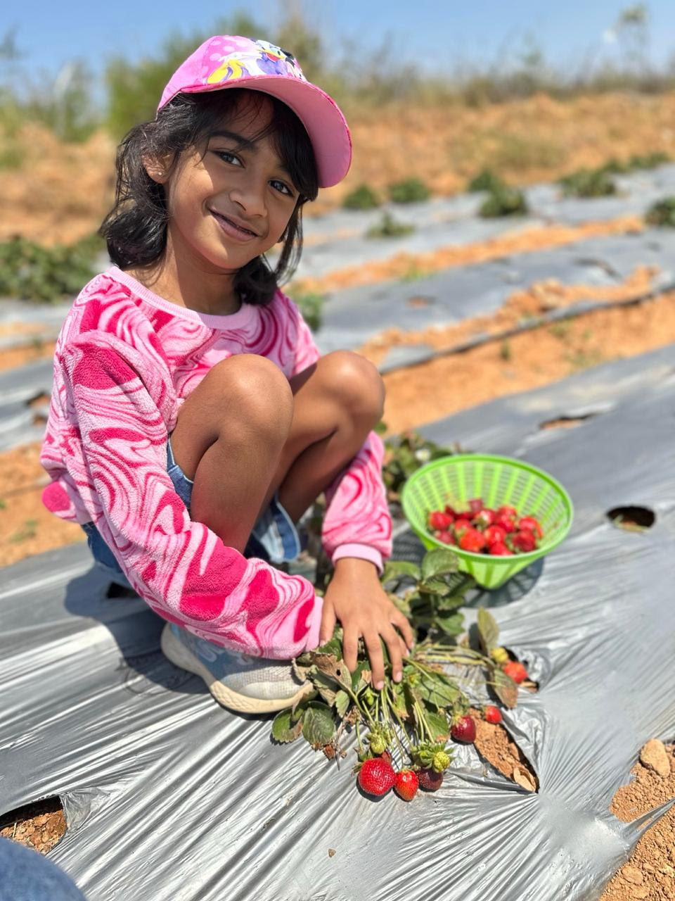

A transformative outdoor educational program designed to reconnect children with the natural world through immersive experiences and hands-on learning.

We believe every child deserves the opportunity to develop a deep, meaningful connection with the natural world.
Our carefully curated programs combine outdoor exploration, hands-on learning experiences, and expert guidance to foster environmental awareness, personal growth, and a lifelong love for nature.
To reconnect children with the natural world, fostering a generation of environmentally conscious, emotionally intelligent, and physically healthy individuals who will lead the way toward a sustainable future.
Choose from our range of engaging programs designed to suit different age groups and interests.
Create, learn, play, and give back! From crafting mandala art with millets to discovering their nutritional power, enjoying Lagori, and making a heartfelt gratitude card—this journey is all about creativity, tradition, and joy.
Learn MoreStep into a world of mud pies, games, seeds & stories – just like Ajji’s good old days! Craft, plant & play the natural way – at our Courtyard
Learn MoreOur Malgudi moments where every frame holds a story of simple joys, curious hands and wonder in eyes.







The sweetest melodies are the voices of families who have rediscovered the joy of simple moments and meaningful connections.
In a world full of screens, Back to Roots gave my daughter the joy of slowing down. She came home with muddy hands, sparking eyes and stories about composting and crows. I could not have asked for a better Sunday!
Back to Roots farm visit was a revelation! Shriya came back with a newfound respect for nature and stories about how our ancestors lived in harmony with the earth. It was like watching her connect the dots of her own heritage.
My son hasn't stopped talking about 'Ajji's courtyard'! From playing lagori to planting saplings, every moment was pure childhood. This is what real learning feels like - alive, messy and full of wonder.
Back to Roots didnt just engage my child -it touched our whole family. Varuni showed the flower garland she made to her Grany and told about Panchatantra story at dinner, and we ended up sharing our own childhood memories. Its not just workshop, its a bridge across generations
At Back to Roots, you're not just booking a program — you're joining a community of families who believe in simple joys, shared stories, and the magic of children growing up close to nature.
We can't wait to welcome you home.